Flutter 從去年年底發佈到現在，也接近一年的時間，目前在寫這篇筆記時，Flutter SDK 版本是 1.9，而也是因為看過不少實際將 Flutter 用在專案產品上的案例，所以才決定要開始探索 Flutter。
什麼是 Flutter
Flutter 是 Google 所提出用來開發跨平台的 UI Framework。我這裡會指跨平台的原因是，Flutter 從早期的手機跨平台，到現在連 Web 或是桌面應用程式都可以開發。(野心真的很大)
環境設定
在開發之前，需要先安裝 SDK (安裝網址)，根據自己的作業系統選擇對應的 SDK 版本下載安裝，詳細的操作步驟可參閱文件，安裝完成後，可以執行 flutter doctor 來確定開發環境是否完整
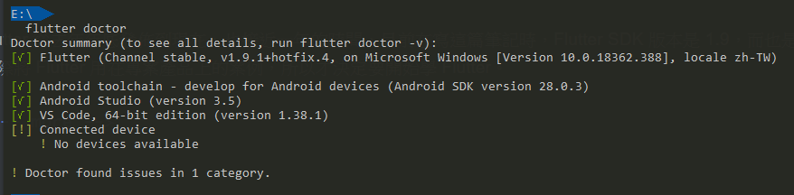
如果有提示，可依上述提示安裝缺少的部分，通常都是 Android SDK 環境的部分需要設定
編輯器選擇
官方首推薦使用 Android Studio 作為開發工具，只要有在開發手機 App 的人，對於這工具應不陌生，這 IDE 對於 Flutter 的支援度是完整而且相關的功能是很強大的
當然也可以使用 Visual Studio Code 開發，也是沒有問題的，只是有些在 Android Studio 上有的功能就不一定會出現在 VSC 上。
編輯器設定安裝步驟，可以參閱此連結
建立第一個範例專案
當上面的環境都設定完成後，第一次安裝者，大概會花 1 個小時左右完成設定，大多數的時間都是在等待下載檔案。
來建立第一個範例 Flutter App 來確定所有的設定是正常運作的
-
開啟 Android Studio
-
建立新專案
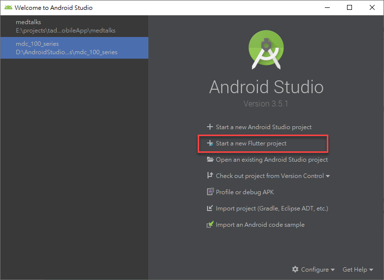
-
選擇
Flutter Application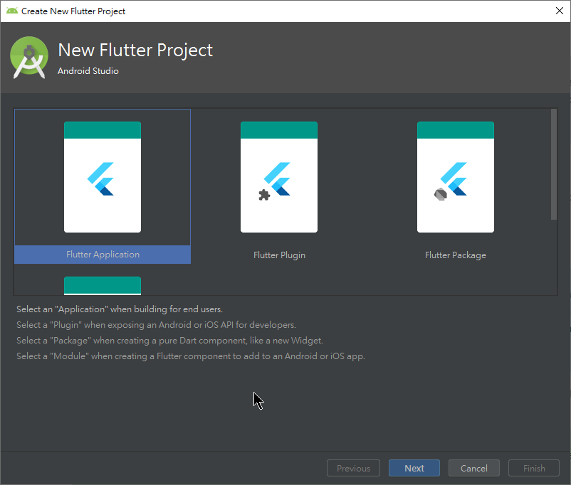
-
輸入專案資訊
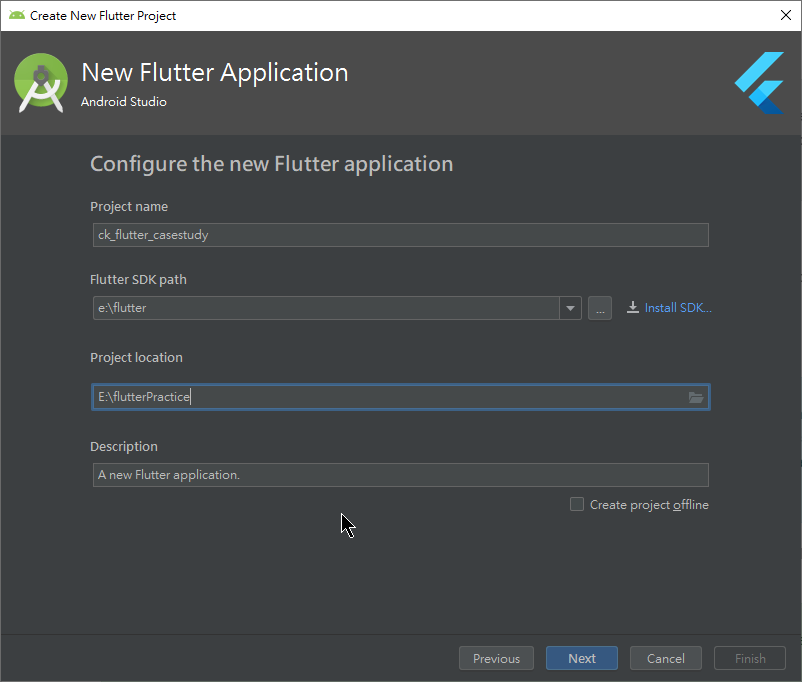
-
設定 package 資訊，基本上預設即可，Kotlin support 當然要選取
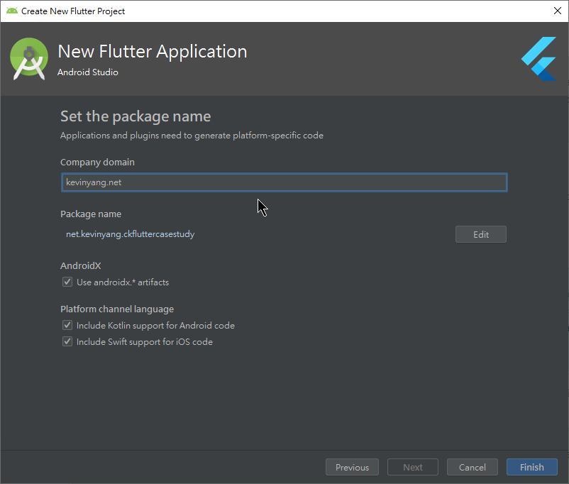
-
Finish 開始建立
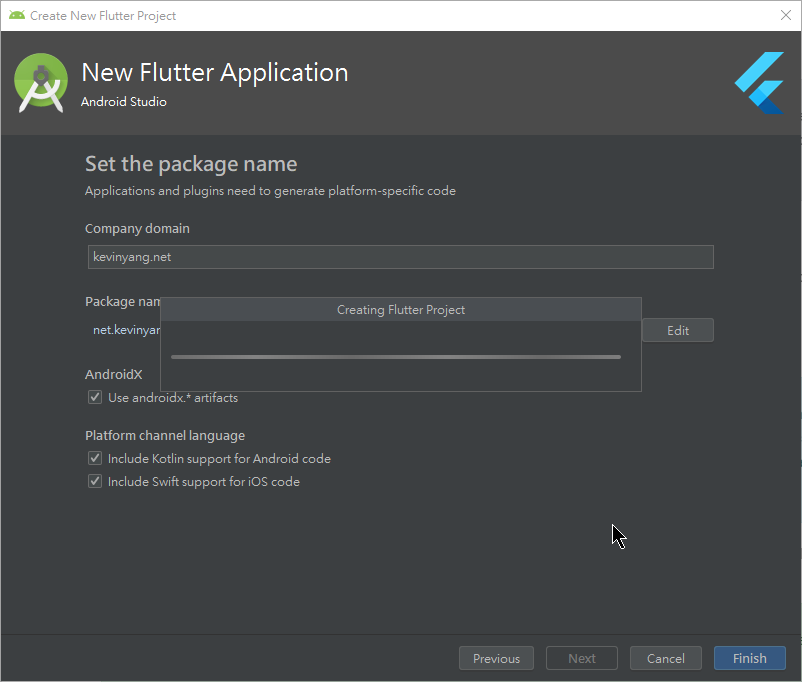
-
專案建立完成後的畫面
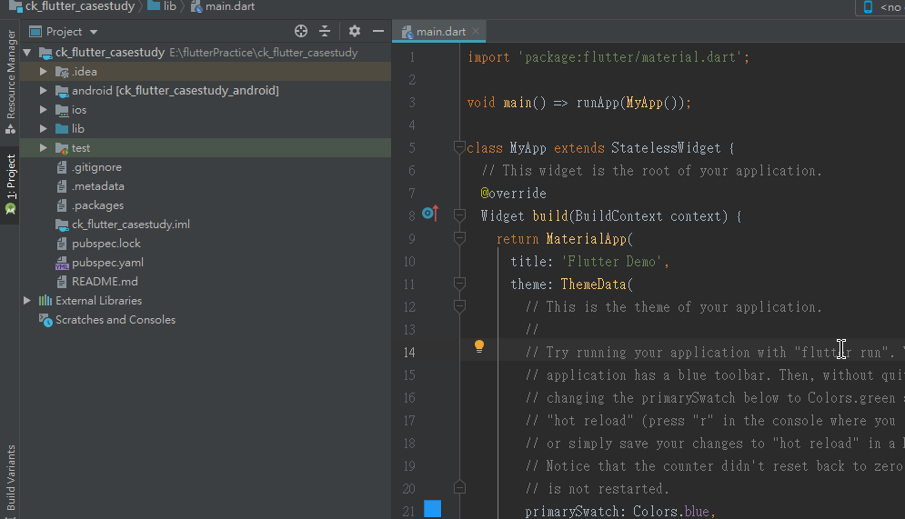
預設範本已經是一個可以運行的 Flutter 專案了，這裡我們有兩個選擇，1. 跑在模擬機上 ，或是 2. 跑在實際手機上。我這裡就選擇跑在實體手機，這樣速度比較快
當用 USB 接上手機時， Android Studio 就可以看到手機型號，同樣的動作在 VSC 也可以做到
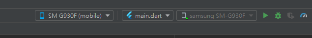
這時候就可以按下 F5 或是點綠色箭頭部屬 App，部屬中的畫面
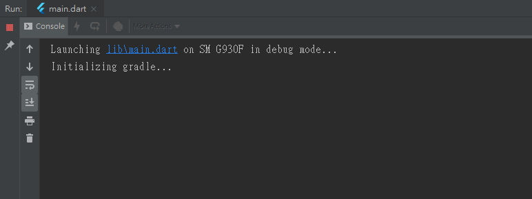
如果看到這一個畫面，就代表部屬執行成功
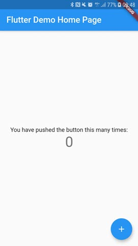
可以點右下角的 + 看到中間數字的改變
Flutter 開發過程中另外一個特色是支援 Hot Reload，這表示在開發時按下儲存時，會立刻影響到開發機器上的 App，可以嘗試修改 Title 來看看效果
修改 MyHomePage Title 文字後儲存看結果，結果會發現 Title 被改變了，而且原本的狀態也沒有被重製，這就是 Hot Reload 的好處
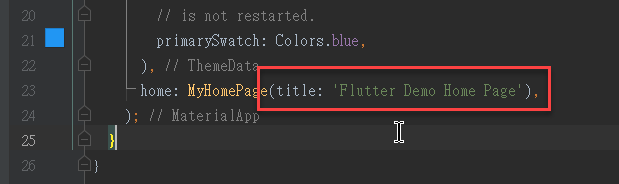
小結
跨平台開發的框架越來越多，而 Flutter 算是後起新秀，也希望 Google Flutter 和社群能持續努力讓此生態圈更強大，之後的學習筆記將會從零開始探索 Flutter